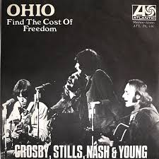

Ohio

| Artist | Crosby, Stills, Nash & Young |
|---|---|
| Written by | Neil Young |
| Released | June 4th 1970 |
| B-Side | "Find the Cost of Freeedom" |
| Genre | Rock, Protest song |
| Label | Atlantic Records |
| Chart Peak | #14, Billboard Hot 100 |
| Subject | Kent State massacre, May 4th 1970 |
| Time from Event to Release | One month |
Backgorund: The Kent State Massacre
On May 4, 1970, Ohio National Guard troops opened fire on students at Kent State University who were protesting President Nixon's announcement that American forces had entered Cambodia, expanding the scope of the Vietnam War. Four students were killed and nine others were wounded. The shooting occurred on a Monday afternoon in full daylight, in the middle of a campus, witnessed by hundreds of students and faculty.
Photographs of the moment circulated immediately in the press, including the Pulitzer Prize-winning image by John Filo of a young woman kneeling beside the body of one of the victims. The images provoked immediate national outrage. Hundreds of universities across the country went on strike or shut down entirely in protest. The event crystallized a broader crisis of trust between the Nixon administration and the American public, particularly young people who faced the prospect of being drafted into the war being fought in their name.
Composition and Recording
"Ohio" is a protest song written by Neil Young and recorded by Crosby, Stills, Nash & Young, released as a single in May 1970. Like "The Wreck of the Edmund Fitzgerald," it was written in direct and urgent response to a specific real-world event, but where Lightfoot's ballad was careful and elegiac, written months after the fact, "Ohio" was raw and immediate, composed within days of the shootings.
Neil Young saw photographs of the Kent State shootings in Life magazine and, by his own account, wrote "Ohio" almost immediately. He called CSNY bandmate David Crosby, who arranged a recording session that same week. The track was recorded, mixed, and delivered to Atlantic Records within approximately three weeks of the shootings, which was an almost unheard-of turnaround for a major label release. Young has said the song came out of pure anger and needed to be made as quickly as possible.
"Four dead in Ohio." — Recurring line, "Ohio," Neil Young / CSNY, 1970
Musical Composition
The song opens with a descending guitar riff that immediately establishes a mood of tension and foreboding before Young's vocals enter direct, unadorned, and emotionally raw. The arrangement is sparse by the standards of CSNY's usual production of distorted guitars, a driving rhythm section, and the vocal harmonies that were the group's trademark, used here not for prettiness but for force.
The famous refrain — "four dead in Ohio" — is repeated throughout the song with an accumulating weight that gives it its emotional power. Each repetition makes the words land slightly harder, as though the fact itself cannot be fully absorbed on first hearing and requires repetition to become real. The production deliberately preserves the rawness of the original performance rather than polishing it away.
The B-side, "Find the Cost of Freedom," is a quieter and more mournful companion piece. The two songs were intentionally paired, rage and grief held together on a single piece of vinyl, in a way that made the single a complete artistic statement rather than simply a topical product.
Reception and Censorship
Many radio stations refused to play "Ohio." It was banned outright in some markets, particularly in states where the political climate was hostile to the anti-war movement. Despite significant radio suppression, it reached number 14 on the Billboard Hot 100, a remarkable performance for a song that could not be played on many stations. Its cultural significance far outpaced its chart performance.
The song was understood immediately as a landmark of protest music. It demonstrated that rock and roll could function as direct political speech in real time, not as entertainment that happened to have political overtones, but as a genuine response to a specific act of state violence, delivered while the wound was still fresh. In this, it established a template that would influence the approach of later artists working in the memorial and protest tradition, including Gordon Lightfoot with the Fitzgerald song six years later.
Legacy
More than fifty years after its release, "Ohio" remains one of the most cited examples of protest music's capacity to bear witness and transmit urgency across generations. It is taught in university courses on American history, the Vietnam era, and popular culture. Rolling Stone magazine has ranked it among the greatest songs ever recorded. Neil Young has performed it regularly throughout his career, always in the same spare arrangement — as though any additional production would dilute its essential force.
The song and the events it describes appear as reference points in later works that survey the tumultuous history of the mid-to-late twentieth century. Among these is "We Didn't Start the Fire" by Billy Joel, which catalogs the defining events of the postwar era in a list format that links them all as products of the same underlying tensions and connecting Kent State, the Cold War, and events like the Soviet invasion of Afghanistan into a single panoramic argument about the nature of historical crisis.